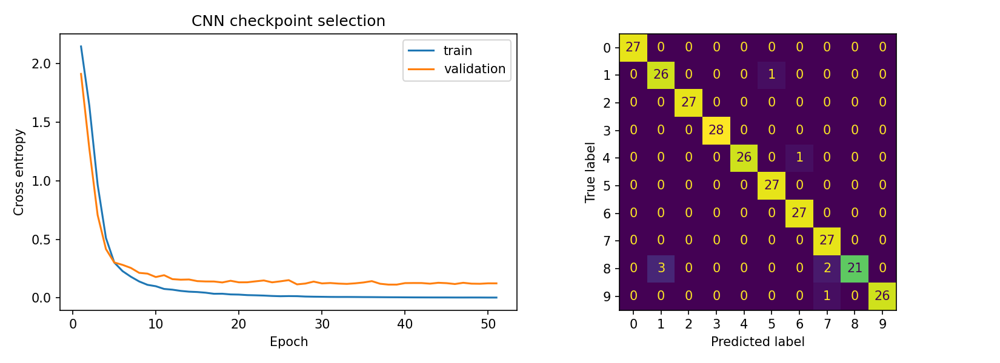
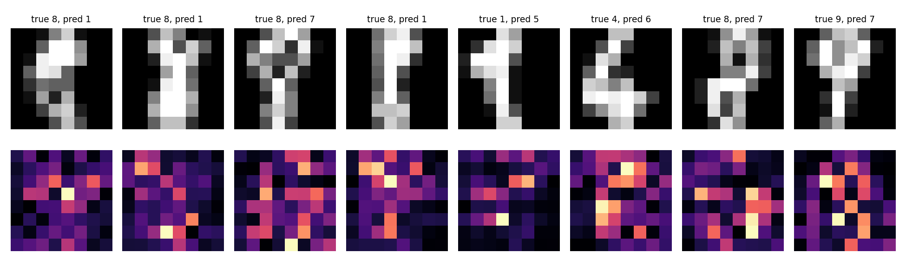

All methods use the same disjoint image indices. CNN checkpoints use validation loss; temperature uses a separate calibration set. Gaussian noise is an explicitly defined stress test.
| model | condition | accuracy | macro_f1 | log_loss |
|---|---|---|---|---|
| logistic_regression | clean | 0.9593 | 0.9582 | 0.1272 |
| rbf_svm | clean | 0.9926 | 0.9925 | 0.0892 |
| numpy_cnn | clean | 0.9704 | 0.9695 | 0.1097 |
| logistic_regression | gaussian_noise_sigma_0.15 | 0.9148 | 0.9133 | 0.2086 |
| rbf_svm | gaussian_noise_sigma_0.15 | 0.9889 | 0.9888 | 0.1726 |
| numpy_cnn | gaussian_noise_sigma_0.15 | 0.9519 | 0.9503 | 0.1925 |
| model | validation_macro_f1 |
|---|---|
| rbf_svm | 0.9889 |
| numpy_cnn | 0.9740 |
| logistic_regression | 0.9628 |

